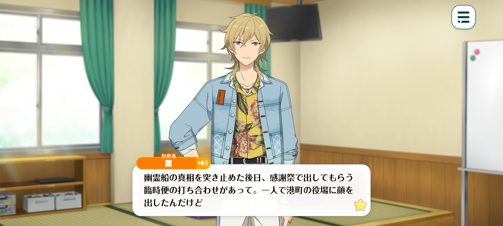
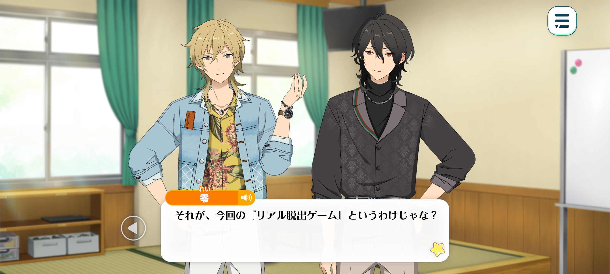
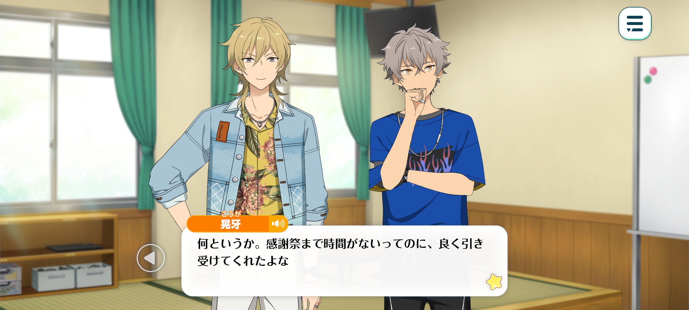
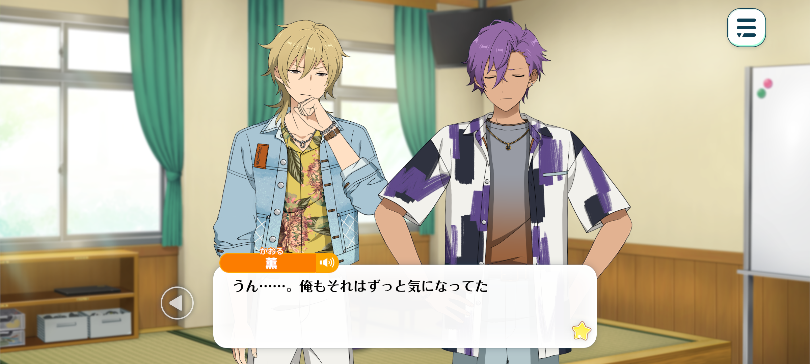
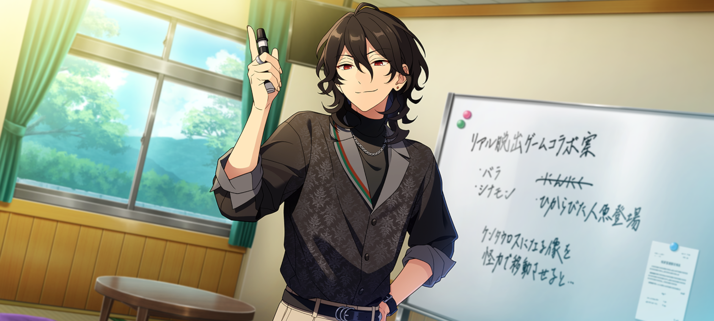

Velvet Ship
Haul Home The Sheets / Chapter 5



Kaoru: Some time after our encounter with the ghost ship, I headed to the town hall by myself to discuss the ferry service they’d promised to provide for our event.
I apologised for pestering them about the whole legend thing, as well as for finding the projector.
In the end, though, they apologised to us for deceiving us in the first place.
Seems they felt guilty about us getting stranded in town because of the fog, even if the whole thing had been part of their revitalisation plan.
…Well, I say I was surprised they apologised, but then again, they had caused us a fair bit of trouble. If they’d just explained the situation from the start, we could’ve saved ourselves a couple of days.
So let’s call it a truce. Everything’s been settled amicably.
And while I was there, I figured I might as well take the opportunity to pitch the project I’d been secretly working on.

Rei: So this is what this “real escape game” is all about?
Kaoru: Yup. I’d been wondering if holding a huge live show on a private island we’d rented out was really the best way to show our appreciation to our fans. I mean, I’m sure they’d enjoy it, but still…
Even if we changed the venue, we’d still be doing pretty much the same thing we always do. I was worried people might come away thinking, “Well, that was… a lot,” only to go home and forget about it.
So I started wondering if there was a way for us to do something together with our fans. That’s when I happened to stumble across an article about real-life escape games.
After doing some research, I found one taking place near ES, so I decided to give it a try myself. And I’m really glad I did.
Since I went alone, I ended up joining a team of people I’d never met before. But as soon as the game started, we all hit it off.
Every time we solved a puzzle, we’d laugh and marvel at what we’d figured out together. It felt really nice, how naturally we’d come together over something like that.
That’s when it hit me. This is it. This is what we need. Unlike a live show, where there’s a clear divide between the people onstage and the people watching, an escape game lets everyone participate on equal footing.
I thought that if we could put together an event where everyone could take part, we might be able to create even more meaningful memories for our fans while showing them how grateful we are.
So I decided to pitch the idea to the town office: what if we used the island to host an escape game?
To my surprise, they were totally on board. In fact, they said we could use the whole town, not just the island.
But that’s where things get a little tricky. The project’s turning into something way bigger than I’d originally planned, and, well, I’m not exactly an ideas guy when it comes to puzzle design.
I’m sure I could come up with a few ideas if I really put my mind to it, but they’d probably be pretty amateurish.
Besides, if our fans knew I was the one who’d come up with all the puzzles, they might hold back from giving their honest opinions because they didn’t want to hurt my feelings.
And that’d kind of defeat the whole purpose of creating something everyone could enjoy together, wouldn’t it? So I decided to ask some professionals for help.
I ended up reaching out to SCRAP, the company behind the other real-life escape game I’d played. [1]

Koga: Man, we haven't exactly got much time left before the event. I'm surprised they agreed to help us out.
Kaoru: Ahaha, you can say that again~
They did laugh a little, saying the idea might not really fit the whole concept of an “escape game.” But then they said, “Maybe the fact that people can move freely around the town will let us come up with some really interesting creative challenges”...
So we changed gears right away and have been working hard on it ever since.
Koga: Sweet. You were in a meeting earlier today, weren't ya?
That's amazin'. You took a few ideas we threw out and turned 'em into a whole event with all these intricate puzzles. Pros really are somethin' else.
Rei: Mhm. Thanks to their help, we've managed to create a first-rate puzzle game themed around UNDEAD and pirates. Kuku, I can already picture the looks of delight on our fans' faces...♪
Adonis: It will be wonderful... Though I do have one regret: the event was announced on such short notice.
Thanks to SCRAP's help, we've even attracted the interest of people who enjoy solving puzzles.
However, there's a limit to how many people can participate. It pains me to think that some who would love to take part may be unable to do so, effectively being turned away.

Kaoru: Yeah... I was worried about that, too.
But don't worry! I spoke with SCRAP before our meeting and told them about my concerns. As it turns out, they'd been getting quite a few inquiries about the event themselves.
So they've decided to run our real escape game in locations all across the country, keeping the same theme!
Adonis: Across the country? Then even those who can't make it to this town will still have a chance to enjoy it.
Koga: Hngh… Is that really a good thing, though?
The whole point of this was to help the town out. Kinda feels like we're stabbing 'em in the back.
Rei: I understand how you feel, Koga. However, if the townspeople had to contend with such an elaborate, large-scale puzzle game day in and day out, surely they would soon grow weary of it.

So please, do not fret. Even if our escape game takes on a slightly different form and is held all across the country…
That does not change the fact that none of this would have been possible without everything that happened here in this very port town.
Besides, this is a place where one can witness a ghost ship. Where else could you find such a wondrous sight?
If stories of the ghost ship, along with fond memories of our appreciation event, are shared far and wide, this port town might one day become a pilgrimage site for UNDEAD fans.
Whether that comes to pass is entirely up to us.
Kaoru: Yup. And that's exactly why we need to give this our all and make sure we're taking things in the right direction.
Let's make this our best fan appreciation event yet! We are~?
Koga + Adonis: UNDEAD...♪
- Real Escape Game (リアル脱出ゲーム) is a popular form of interactive puzzle-solving entertainment in japan, actually pioneered by the real company SCRAP! It’s a little different to traditional escape rooms as they can take place in loads of settings, like amusement parks, train stations, stadiums etc.